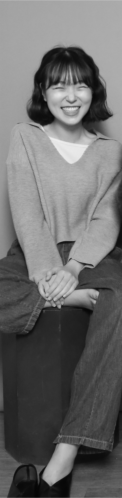

|  |
"my profile"이름 유경민 출생 2000년생 소개 어렸을 때부터 손재주가 좋았던 저는 미술을 전공하며 학교를 대표하였습니다. 그런 저는 자연스럽게 예술고등학교에 진학하여 디자인을 전공하게 되었습니다. 웃음이 많고 쾌활한 성격입니다. 외향적이기보다는 내향적이며 눈썰미가 좋다는 말을 자주 듣습니다. 조용한 취미를 좋아합니다. 사진 찍기, 블로그, 다이어리로 기록하는 일을 좋아하며 손으로 만드는 것을 좋아해 패션디자인을 부전공으로 다루고 있습니다. "시각 영역과 패션 영역을 아우르는 디자이너"가 되고 싶습니다. 학력 사항 2016년 포항예술고등학교 입학 2019년 포항예술고등학교 졸업 2019년 동아대학교 산업디자인학과 입학 |